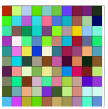
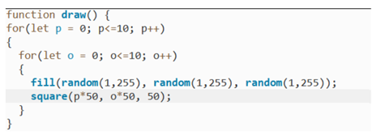
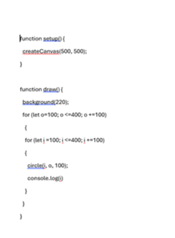
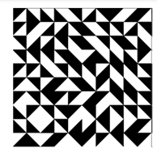
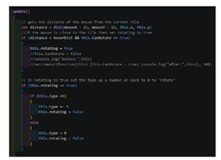
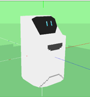
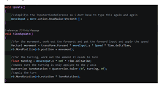

In our first tutorial we explored the open-source programme p5.js. This is a JavaScript library for creative coding. I had never done any JavaScript programming, so it was something very new to me. We were taught some of the functions and code in our tutorials. We then learnt how to do loops and grids. How to set up our workspace canvas on a website using github and visual studio code


After the sessions, I went away and learnt the rest of the basic functions and some of the more advanced functions by using the API.

The Code for Circles in the grid
In our next session we learnt how to build a grid inspired by Piet Mondrian’s Line Over Form. We learnt how to code different thickness of grid borders and cell sizes and how to make them random.
As the sessions went on, we learnt more of the mathematics side of p5.js. We learnt polar coordinates and their formula, using angles beyond polar coordinates and Perlin noise. Perlin noise creates a smooth gradient noise map.
Fun fact! Ken Perlin developed Perlin Noise in the 1980’s while developing the Tron Movie!
I really enjoyed learning about this software and its potential to create art using maths. Art and drawing are definitely not something I am very good at, so to be able to create something using programming was perfect for me.
For my first project I researched different grid artists including Ad Reinhardt, James White and Muhib Hanson. I wanted to do something different that was also interactive. So I decided to do Truchet tile and the interactivity would be moving the mouse over the tiles and it would cause the tiles to rotate.


The second half of the P5.js project was to create a Mathsviz project I really wanted to do a Barnsley fern, so I researched how to create fractals and geometric tiles to use for the project.
Our next project was to create a basic AR character. This module is the one I have been most looking forward to. I hope to pursue a career in AR and VR programming.
As I already had working knowledge of Unity and C# programming I was keen to get on with learning how to programme in AR. I had a lot of fun messing about with AR. I took a 3d model of a tree from a unity store asset and I placed it in different locations around the room. This taught me how to place virtual objects in a real life environment by using the Unity App. There are several other apps that can be used to programme AR but as I already had knowledge of unity I decided to use that.
We were taught how to use the android SDK and how to use a marker. I chose to use a QR code as my marker.
IMAGE
I explored using polycam, which allows you to create 3d scans. I decided not to use it as there is too much editing required to get it to work properly. Instead, I decided model it myself using a piece of software called Crocotile 3d. Art is not my strong point, however I am quite good at pixel art, so i decided to create a low-poly robot using a new piece of software called Crocodile 3D I taught myself how to use Crocotile 3D so I could create a simple lowpoly model to use with the AR project. One of biggest bonus of using a low-poly model is that it doesn’t take up much rendering power, so it is quicker to complile and enables apps to run smoother, which is ideal when using it on mobile devices and in VR.
IMAGE OF CROCOTILE LOGO
After spending time learning how to programme basic AR placements in Unity. I then moved onto my project. I wanted to create a robot based on the security robot from watch dogs 2.
I tested a simple rigid body-based character controller to see how it would interact with detected planes and it saw it as a collision, which gave me the inspiration to make a small model that would run around.

then improved upon the simple rigid body system, as I wanted the robot to have smoother and more realistic controls. I decided to use Tank controls. This means that the robot will turn and face the direct you want it to go. So if you want the robot to move to the left, it will rotate and face that direction, which I think looked a lot better than it just moving sideways left.
Video of robot

I learnt how to use touch designer, this was something i really didn't enjoy using.
Touch Designer uses Operators (OPS) that are organised into families ie SOP which is surface Operators and TOP, which is texture operators and CHOP channel operators. Touch Designer is mainly programmed using visual scripting, it uses python language for scripting tasks that offers deeper control and able to customise by adding in coding.
For my project, I decided to make an interactive experience that uses a webcam to track hand movements and creates an on-screen ghost effect. I wanted it to manipulate real-life surroundings rather than using a background or artwork. I also added a second interactive element where the waveform of audio input (the microphone ) creates a wave pattern on screen.
Touch Designer is a complex programme and has a super high learning curve. I felt the three weeks we were given to do the project were nowhere near long enough to learn the full functionality and capabilities of the programme. I believe this is why I found this project so difficult, as in order for me to create something in a programme, I need to fully understand it. I have a good working knowledge of Python, but anything I tried within this project using Python coding language did not seem to work. For example, I tried to add a four loop that would change the text in a text file. I did this to learn how to integrate python into my project. However, when i saved the script and ran it the software crashed and I lost everything. A four loop is a very simple piece of programming and I can not understand why the programme could not handle it. I found this very frustrating.
PYTHON CODE
I found with touch designer everything I had done for my project could be done in a game engine a lot easier and a lot faster. If I had had more time I probably would have learnt more about how Touchdesigner can glue lots of different applications together so I could have added sound to it via midi and do an audio visualiser.
Went on a trip to London to Frameless and the Immersive Viking experience.
Frameless is an Immersive Art experience in central London just down from Marble Arch. Using Immersive digital technology Classic Artwork is brought to life and projected all around you. Artists work such has Monet, and Van Gough are displayed on the walls, ceiling and floor. There were four different galleries each with a different theme. The World around us, Beyond reality, Art of abstraction and Colour in Motion. There was also a nice cafe, it was expensive Tho! Cost me £10 for a sausage roll and a coffee!! It was a fun and a new way to see artwork. By using technology and interaction you were drawn into an immersive experience that felt like you were stepping into the art.
PIC OF FRAMELESS
he Viking experience was rather disappointing it promised to be an immersive experience. Upon entering the first screen you come across was broken and the application wasn’t working. Everything in the experience was created heavily using Ai. When you entered the first bit, you see a little girl running through the forest with a girl and a dog, it was obviously AI generated and looked really cheap. The VR room images where really blurry and you couldn’t really see anything very well, The floor was chrome and it was really odd. Sitting down on the boat with the 360 projections again used AI for the people and the story was really incomprehensive. It was poorly explained and the profession of the father kept changing, not making in any sense. At the end there was an AI chatbot answering questions, but as it was using AI there was a disclaiming saying the responses might not be historically accurate!
As far as historical accuracy and engaging people to learn about the Vikings, it failed miserably. I would probably have learnt more information and with more accurate historical content by playing Assains Creed Valhalla.
Pic of viking experience
As well as this I have been working on my final project. I have been doing some research into projects that used mixed reality as I want to do something using both AR and VR.
I worked using a mindmap and sketches to come up with a suitable idea for the project. I had decided to create a mixed reality remote controlled car and a vr track build.
We had to create a Group presentation on considering the area of creative computing you where most interested in and employability options. I focussed on VR and AR as that is the industry I want to go into. I researched different jobs and looked at some current vacancies that I felt where related to my chosen area of expertise.
Pic of slides
I worked hard on the build for VR track and how it integrates with the surrounding real life background. I wanted the car to be able to go both on the track and on the surrounding objects. On the prototype i made all the furniture and decor as detected objects, I hope for the final project to use raw mesh, but in the prototype, in testing in Meta’s XR simulator, none of the testing environments had raw mesh.
The hardest part of the programming for the track was the snap system. I didn't want to use sockets as that was not what I was trying to achieve, as I wanted to make a grid. The snap would need to snap to the axis. It took me a long time to work out how to do it but I converted to a float Quaternion then times by 10, rounded that number and then dived it by 10, this made the object snap to the grid.
image of code
I got three different people to test my prototype. They were all different ages and had varying game experiences, I felt this was a solid test for all ages and abilities. The game is designed for all ages and abilities and all of them said it was simple to use and had logical controls.
After the testing, I added some more assets as suggested by my testers and a recall car button just in case the car disappeared or went out of the boundary. I did try and remove the boundaries to stop the car disappearing, but I was unable to do it and it was greyed out in the options menu. It said I needed the passthrough component, but I already had it.
I am really pleased with the current position of car track programme. I really hope to continue to work on it and make it a polished programme.